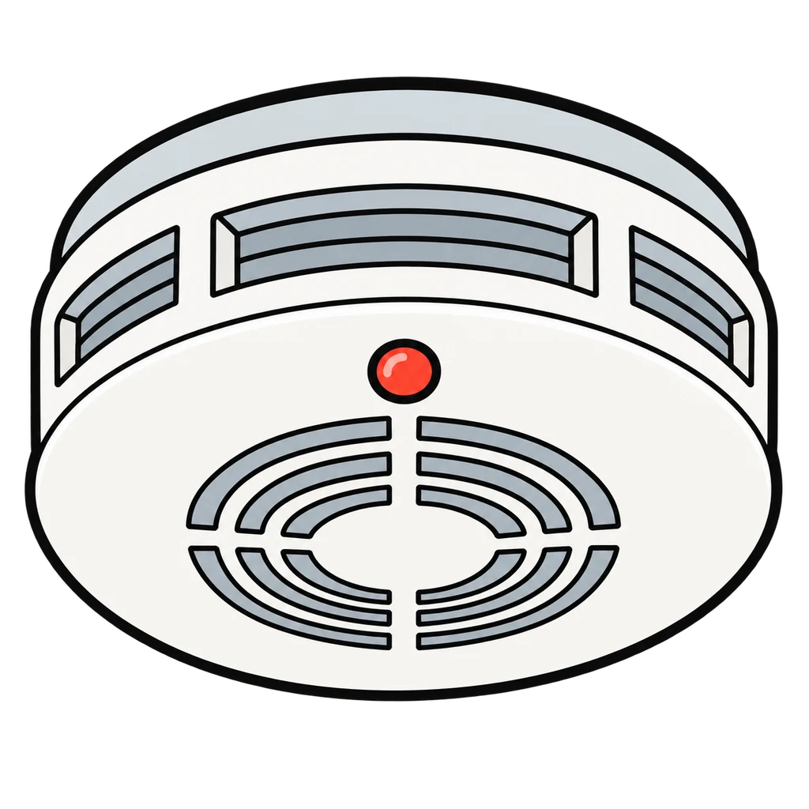
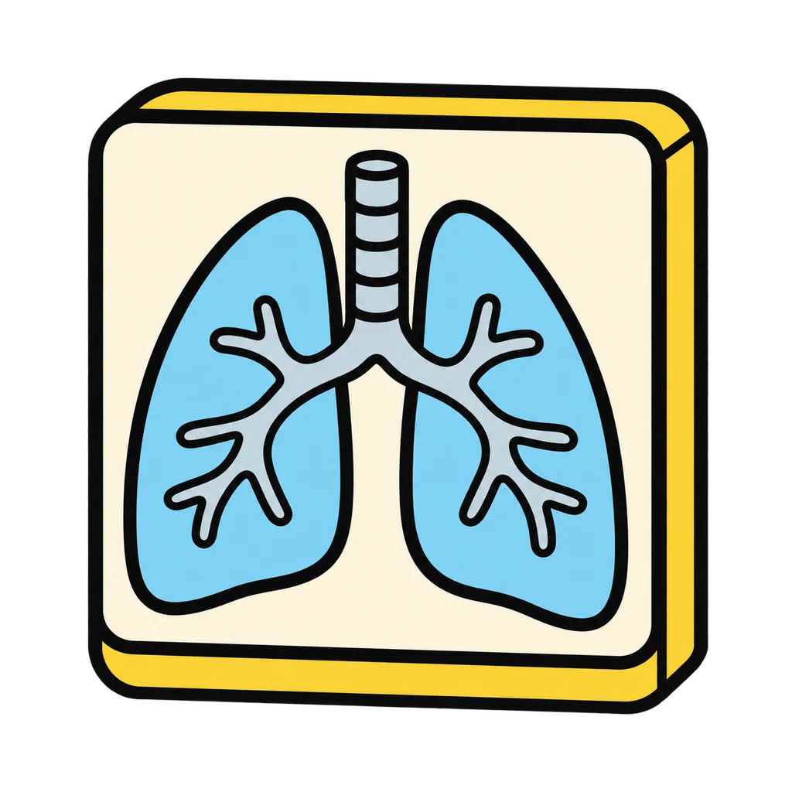
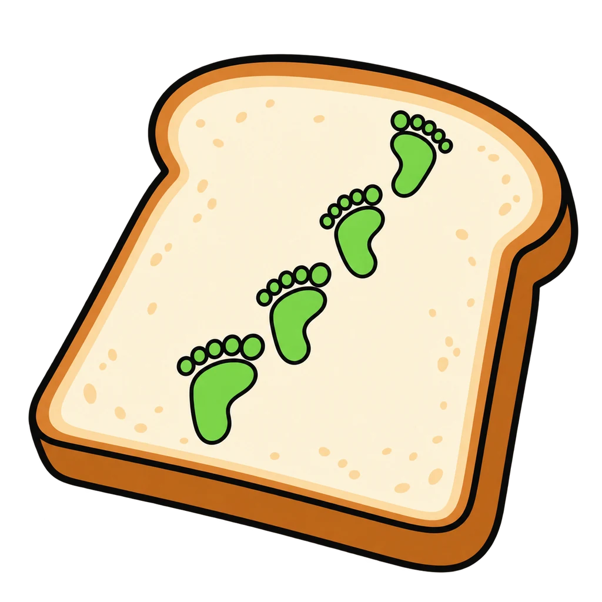
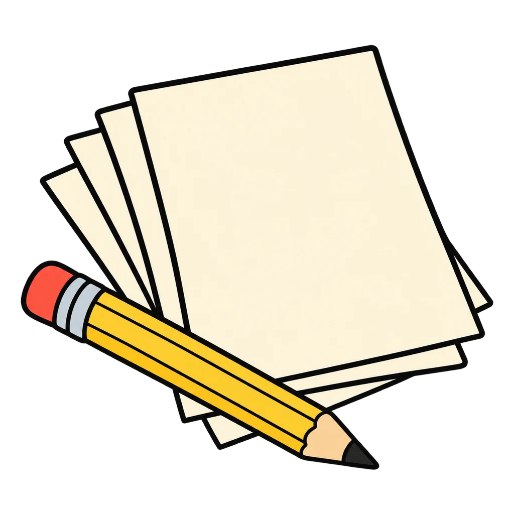
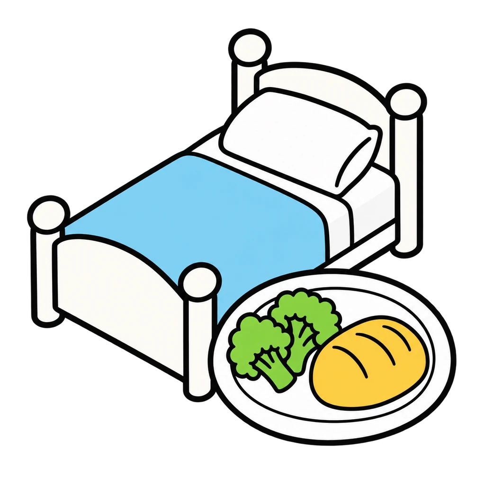

Reviews Lesson 3.7, Lesson 3.8. Toast or Fire reviews Lesson 3.7 (handle it or bring it, the who-to-ask list) and Lesson 3.8 (the six stress tools and their steps). Use it at the start of Lesson 3.9 before the Stress Plan so the tool names and steps are fresh, or as review for Unit 3 Test item 7. Nothing personal is asked: the game never asks a player for a rating, a stressor, or a map; Round 1 sorts the handout's own general list and Round 2 matches steps to tools. One Round 1 card is the handout's line "anything that makes you not want to be here"; the feedback names the who-to-ask list, and if you would rather not have that card in a game, remove it and keep nine.

Toast or Fire
A kind of stress appears. Tap handle it, the kind you handle with a tool, or bring it, the kind you bring to an adult. Then the steps for a tool appear, and you tap the tool from six pictures.
How to play
- The alarm rule: the same alarm goes off for toast and for fire. Both times it is doing its job. Good stress is short, pointed at something you can do, sharpens you, then leaves. Bad stress is too long, pointed at something too big or out of your control, wears you down, does not leave on its own.




Done
The ones to study:
Worth knowing by heart:
- Stress: the body's response to a demand or a threat (Handout 03.07 Part 1)
- Good stress vs bad stress: how long, pointed at, what it does
- Handle it or bring it, and the who-to-ask list (Handout 03.07 Part 4)
- The six tools and their steps (Handout 03.08 page 1)